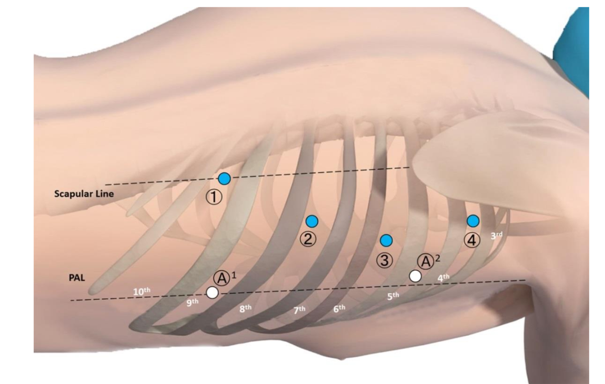
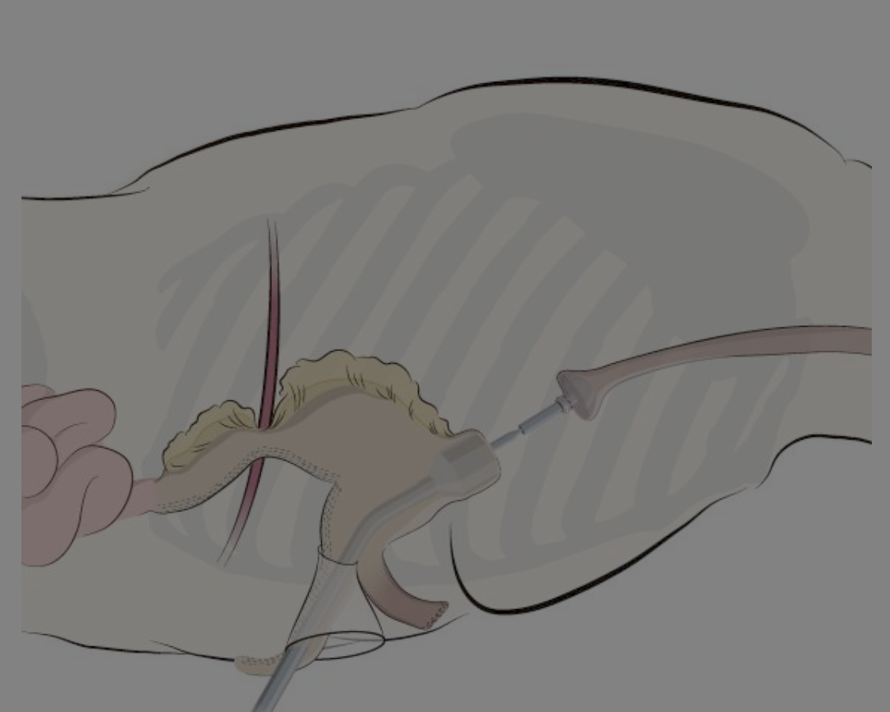
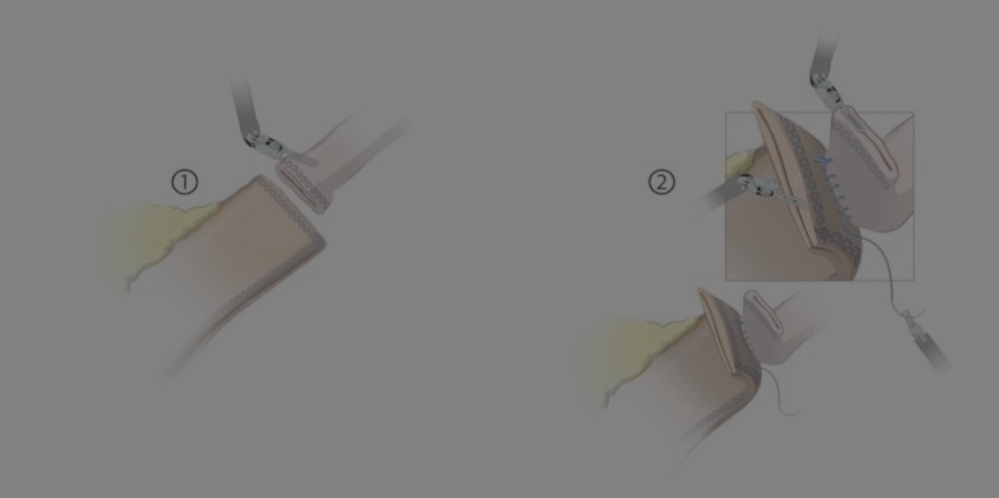
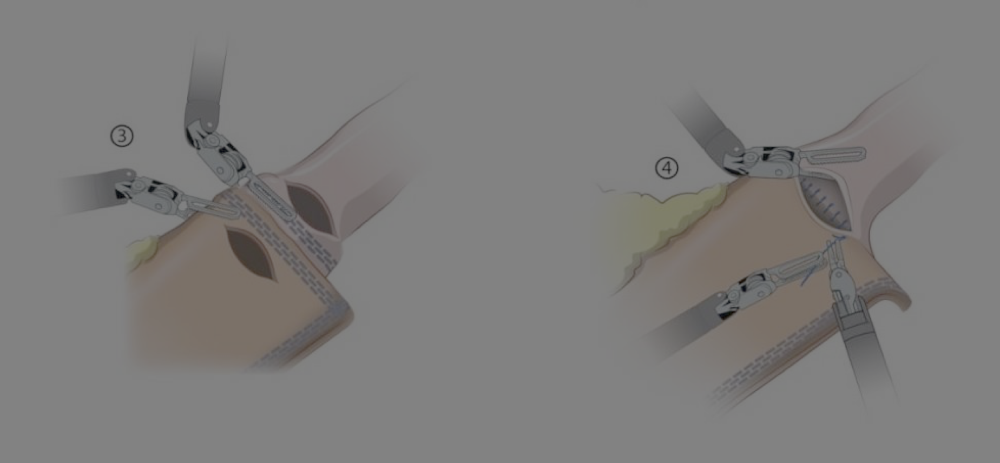
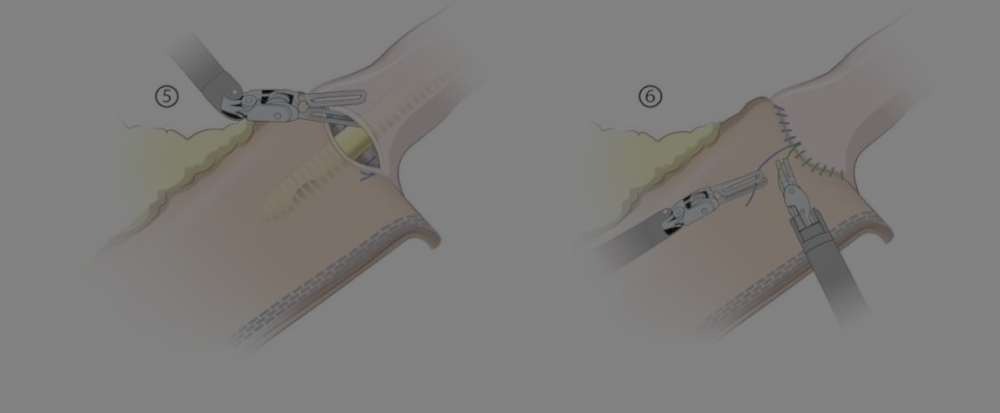

Robotic Esophagectomy Utrecht
Utrecht
Upper GI International Robotic Association
Robotic Procedure Guide Ivor Lewis Esophagectomy
Robotic Procedure Guide Ivor Lewis Esophagectomy
Atlas of Robotic Upper GI Surgery Ch 14 Peter Grimminger
Abdominal Phase
Positioning: Reverse Trendelenburg 20-25degrees and 10 degree rotation to right
Ports:
Nathanson sub-xiphoid Assistant port just below umbilicus Port #1 (Cadiere) Right anterior axillary line Port #2 Between Port #1 and midline. 12mm for stapler and vessel sealer Port #3 Mirror image of Port #2. For Camera Port #4 Left anterior axillary line. For Hook cautery (Right Hand)
Pars flaccida -> Right crus. Dissect out left gastric artery if large replaced left hepatic artery.
Mobilize greater curvature
Vessel sealershort gastrics
- Division of gastroesophageal and phrenoesophageal ligaments and right crural dissection. An energy device is used to divide the gastrohepatic ligament and the esophagus is dissected from the right crus. Dissection is carried anteriorly where the phrenoesophageal ligament is divided. Disssection posterior to esophagus
- Division of left gastric artery and vein. Common hepatic artery nodes taken with specimen. The left gastric artery and vein are dissected and surrounding lymph nodes are swept toward the stomach; they can be removed at this time or with the specimen later. The artery and vein are divided with Weck clips or a vascular cartridge stapler. Posterior stomach dissected in medial to lateral fashion. RvH prefers to dissect left gastric from greater curvature side (posterior to stomach)
- Mediastinal dissection. A Penrose drain is placed around the esophagus, approximated to itself (ie with a stapler), and used for retraction to circumferentially dissect the mediastinal esophagus to the level of the inferior pulmonary veins. The Penrose is tucked into the mediastinum.
- Preparation of right gastroepiploic pedicle. The right gastroepiploic artery and vein are identified, the lesser sac is entered, and a healthy pedicle of right gastroepiploic adipose is created. Dissection continues towards the pylorus and then cranially along the stomach’s greater curvature. Kocherize duodenum. Cadiere and Vessel sealer in left hand.
- Creation of pedicled omental flap and division of short gastric arteries and veins. A pedicled omental flap is designed based on right gastroepiploic and short gastric arterial inflow, and the highest short gastric vessels are divided.
- Creation of gastric conduit. The lesser curvature adipose is divided between the caudal 2 branches of the right gastric artery and a 4-cm wide conduit is created with serial applications of green staple cartridges. The conduit is never itself directly grasped. RvH starts construction of conduit 3cm from pylorus
Assistant retracts the gastric fundus toward the left upper quadrant. Tip up has gastric tip length 60mm to help gauge diameter of gastric tube (5cm). RvH aims for 3cm tube
Can leave GE junction and conduit still connected OR divide completely and re-suture. If re-suture, plan to suture in more than one place to avoid torsion.
Suture JP2 to the GE junction to pull it into the chest cavity.
End of first staple line is tagged with Vicryl suture as a marker to guide transposition of conduit into chest.
Pyloroplasty. Tip Up retracts antrum to patient left. Open longitudinally with scissors. Stay sutures. Close with interrupted 3-0 silk RB-1. RvH does not perform pyloric drainage.
Feeding jejunostomy. Move camera to Port #2 (to back camera away from surgical site). May need to undock Arm #4. Use 3-0 Stratafix RB-1 to fix jejunum to anterior abdominal wall. Run suture between abdominal wall and bowel 1/3 way around. Seldinger technique to place jejunostomy. Continue to run 3-0 suture. Pass suture cephalad to other side. Then run cephalad to fix jejunum to anterior wall to avoid torsion.
Thoracic Phase
Modified prone position on a bean bag with break at the level of the tip of the scapula. Axillary roll. Right arm is kept low at a 90 degree angle, allowing the scapula to move medially. Slight reverse trendelenburg to keep shoulder higher than hip (to avoid collisions). Rotate patient ventrally so that posterior axillary line is highest part parallel to floor (right tilt or foam trangular wedge) Kingma Dis Eso 33 supp_2

- Arm #4 4th ICS 1cm medial to scapula
- Arm #3 6th IS more medial than 4th arm and close to posterior axillary line. Camera Port.
- Arm #2 8th ICS 12mm port for Vessel sealer or stapler
- Arm #1 10th ICS on the scapular line or posterior on 10th ICS A1 Assitant 9th ICS triangulated beween 1 and 2. Alexis port used for extraction incision A2 Assistant 5th ICS.
DaVinci docking with “Anatomy: Renal” “Patient Right” Target on azygous vein
Dissect plane between lung and anterior aspect of esophagus. Start dissection at the pericardium and proceed cephalad. Once the area of the right mainstem bronchus is approached, keep plane more superficial.
Dissect onto pericardium. Confirm that tumor will comes off pericardium. Leave pulmonary vein dissection to later. Counter traction with suction.
Dissection over parietal pleura up to azygous arch superficially. Dissect lower aspect of the azygous vein.
Superficial dissection superior to azygous vein to reach superior extent of dissection at inferior border of sygous svein, then proceed inferiorly along the posterior aspect of the esophagus. Dissection proceeds to hiatus.
Divide azygous vein with either vascular load stapler or Gray load
Dissection proceeds to hiatus
Divide thoracic duct with Hem-O-Lock clips at least 5cm superior to hiatus.
Return to dissection plane anterior to the esophagus and deepen plane. Leave dissection of Station 7 nodes until esophagus is completely freed up. Can switch instruments in Arm 1 and Arm 2.
Dissection of Station 4R nodes.
Dissection of subcarinal (Station 7) nodes. Start by dissecting esophagus from trachea, then outline inferior border of right and left mainstem bronchi. Keep Station 7 lymph nodes on the specimen.
Dissect 4L nodes, if desired.
Dissect Station 5 nodes
.Completion of conduit and removal of specimen. The conduit is delivered into the thorax. This is done using a laparoscopic graster. Ensure staple line faces you (right side). The specimen is removed through the assistant port incision. An Alexis port is used to seal the extraction site. Stomach is pulled into the chest until the Vicryl marker suture is seen.
Division of esophagus just above level of azygous vein. ICG can be used to check perfusion. If there is any question about the length of the conduit, confirm the length of the conduit prior to division of the esophagus.
Circular stapled anastomosis
Large needle driver to grasp anvil
Camera moved back to Port 3 (from 2) to visualize anastomosis better
Port #1 may need to be remove for visibiity
Intact minor gastric curvature of the transected specimen is brought out of the chest through the mini-thoracotomy. To insert the circular staper handle the stomach conduit is opene by incision the stapler line previusly created at the antrum in the minor curvaturell. The incision is made in the distal third of the antrum to introduce the stapler handle as far away from the gastro-esophageal crossing and allow a large distance to the greater curvature.

Hand-sewn Anastomosis
Posterior running 4-0 Stratafix running posterior wall

Conduit and esophagus opened anterior to staple lines, which are incorporated into the staple line. Take care to ensure incision length is the same on conduit vs esophagus.
Next the lumen of the esophagus is held up with a Cadiere Forceps by the da Vinci, while the assistant exposes the gastric tube in order to minimize the tension on the tissue . The second layer of the back wall is created by a running Stratafix Spiral® 3-0 (SH) suture placed transmural. The suture is started dorsally (9 o’clock position) and continued to ventrally (3o’clock) via the 6 o’clock position with the needle inside-out on the esophagus and outside-in on the gastric conduit. The knot is placed extraluminally.

The anterior front wall is closed with 2 Stratafix Spiral 3-0 sutures starting one each at the dorsal and ventral edge of the remaining opening. The first suture is started dorsally (9 o’clock) and run to the middle of the opening at 12 o’clock. The second suture is run from ventrally 3 o´clock finishing ventral at 12 o´clock, meeting the first suture line. The securing knot is placed extraluminally.

The previously mobilized mediastinal pleura is closed with either single stitches or a running suture on top of anastomosis starting at azygos stump for about 4 cm distal, and pulling in small piece of omentum for protection. This enables fixation of the gastric tube and reinforcement of the anastomosis.
Linear Stapled Anastomosis
The esophageal stump is opened on the (right side) within the middle with cold scissors or monopolar cautery hook proximal to the transecting stapler line
The site for linear stapler insertion is measured to be at least 6 cm distal to the transecting staple line on the gastric conduit. The incision is made using monopolar cautery close to the gastroepiploic arcade
Four retraction sutures are placed (dorsal, ventral, medial and lateral) around the opened esophageal lumen, making sure to fixate the mucosa to the rest of the esophageal wall. These retraction sutures will serve for applying optimal retraction on the stump for anastomotic suturing as well as help guide the esophageal stump over the stapler anvil.
The EndoWrist stapler anvil and cartridge jaw (30 mm length) are inserted into the appropriate lumens while the console surgeon guides the tissue onto the stapler with the da Vinci instruments. Once sufficient tissue overlap is achieved (approximately 60 mm) the stapler is fired (blue reload) and the gastric conduit and esophageal stump are connected dorsally side-to-side
34Fr gastric tube inserted. Anterior wall closed with two 4-0 Stratafix sutures run from each side toward the middle. Overew with 4-0 PDS
Pleura and gastric tube
15.Omental flap buttress. The omental flap is positioned between the conduit and airway and the anastomosis is loosely wrapped.
Grimminger PP, Hadzijusufovic E, Lang H: Robotic-Assisted Ivor Lewis Esophagectomy (RAMIE) with a Standardized Intrathoracic Circular End-to-side Stapled Anastomosis and a Team of Two (Surgeon and Assistant Only). Thorac Cardiovasc Surg 66:404406, 2018
Hand-sewn anastomosis
Hand-sewn Anastomosis (Ng et al., 2025) Anastomotic leakage occurred in 11 patients (12.4%), which involved a grade I leak in four patients (4.5%), grade II leak in one patient (1.1%), and grade III leakage in six patients (6.7%). Stricture rate was 32.6% (29 patients) at 1 year post-operatively for which dilation was needed for all patients.
Hand-sewn vs Stapled (Groot et al., 2020) Compared Utrecht to Sweden 2016-2019. 68 hand-sewn vs 60 stapled. Hand-sewn leak rate was 40% for cases 1-10 and 10% for cases 59-68. Overall leakage after hand-sewn in 22 patients (32%): Grade 1 =5(7%), Grade 2= 7(10%), Grade 3 10 (15%). see (Egberts et al., 2019)
Overall leakage after stapled anastomosis in 10 (17%). Stapled anastomosis leak rate 10% for cases 1-10 and 20% for cases 51-60.
Learning Curve for Hand-sewn McKeown Esophagectomhy (vandersulis264?)
A robot-assisted, single-layer running, hand-sewn technique was applied to first close the posterior wall and then the anterior wall by two separate suturing wires that were placed in identical direction to end at the same site (i.e. from 9 to 3 o’clock). If possible, the tip of the gastric conduit was removed, and an omental wrap was positioned around the anastomosis. The surgical technique was refined during the inclusion period. The first 13 cases were end-to-end (E-T-E) anastomoses. After consecutive case 13, a transit was made to an end-toside (E-T-S) anastomosis in order to be able to better tailor the level of the anastomosis at the level of the gastric tube. Furthermore, at consecutive case 18, the surgical team switched from using V-Loc 3.0 barbed suture wires (Medtronic) to Stratafix 3.0 (Ethicon) barbed suture wires. The reason for the change was that the more rigid v-lock suture could damage the esophageal wall at the level of the stiches. Starting with consecutive case 21, four supportive stitches were placed in the esophagus (i.e. at 12, 3, 6 and 9 o’clock) before initiating the suturing. Finally, to avoid traction on the anastomosis, four tension-release stitches (i.e. at 12, 3, 6 and 9 o’clock) were placed in the serosa of the esophagus and gastric conduit from consecutive case 47 onward. Consequently, the final anastomotic technique involved an E-T-S intrathoracic anastomosis that was created by the successive placement of four supportive stitches, single layer continuous suturing of the posterior and anterior wall with two separate Stratafix wires, four tension release stiches and an omental wrap. The incision in the gastric conduit for creating the anastomosis was made as far as possible from the longitudinal staple line and near the omentum.
Circular stapled anastomosis: The creation of the gastric tube is deliberately incomplete. The small gastric curvature later serves to introduce the circular stapling device in the thoracic part of the operation and is resected afterward. From our point of view, the main advantage of this method is the possibility to determine the needed length of the gastric tube in the thoracic part of the operation. The anastomosis begins with the introduction of the circular stapler anvil in the transected esophageal stump. The fixation of the anvil is secured by a pursestring suture (Stratafix 3.0). For this fixation, we use a barbed suture, which delivers a very good result especially with the robot.19 For this purpose, the bougie (24Ch) that was introduced to prevent an esophageal spasm is withdrawn. The minor curvature is now brought to the thoracic wall and incised through the assistant port. A circular stapling device with a diameter of 29 mm can now be inserted. Now, a suitable location for anastomosis can be selected near the greater curvature. Here, particular attention should be paid to the correct length of the gastric tube: the anastomosis should not be under tension, but a gastric tube that is too long can lead to emptying disorders postoperatively due to the formation of a siphon and might be not well perfused. For that reason, routinely fluorescence angiography with indocyanine green is performed to ensure adequate perfusion of the gastric tube. After selecting the appropriate location, the mandrel is extended and connected to the anvil. An assistant puts the gastric tube under slight tension and completes the anastomosis. After insertion of a bougie past the anastomosis, the minor curvature is transected with a linear stapling device, and the specimen is salvaged via the assistant port. This is followed by the circular stitch over of the anastomosis and the proximal row of the gastric staple line. It can be helpful to change the camera to arm 2, resulting in a superior overview and improved freedom of movement for the bedside surgeon.
Stapled Anastomosis
MIE collected series of 646 cases of Ivor Lewis esophagectomy found plateau of anastomotic leak at 8% (Workum et al., 2019). Cases from from European center. his study included 646 patients. Three of the 4 hospitals reached the plateau of 8% anastomotic leakage. The length of the learning curve was 119 cases. The mean incidence of anastomotic leakage decreased from 18.8% during the learning phase to 4.5% after the plateau had been reached (P < 0.001). Thirty-six extra patients (10.1% of all patients operated on during the learning curve) experienced learning associated anastomotic leakage, that could have been avoided if patients were operated by surgeons who had completed the learning curve. The incidence of textbook outcome increased from 28% to 53% and the mean operative time decreased from 344 minutes to 270 minutes.
Internatioal Upper GI Association: Kingma BF, Grimminger PP, van der Sluis PC et al (2020) World- wide techniques and outcomes in robot-assisted minimally inva- sive esophagectomy (RAMIE). Ann Surg.
van der Sluis PC, Ruurda JP, van der Horst S, Goense L, van Hillegersberg R (2018) Learning curve for robot-assisted mini- mally invasive thoracoscopic esophagectomy: results from 312 cases. Ann Thorac Surg 106(1):264–271. https:// doi. org/ 10. 1016/j. athor acsur. 2018. 01. 038 26.
FeikeKingma B, Hadzijusufovic E, van der Sluis PC et al (2020) A structured training pathway to implement robot-assisted mini- mally invasive esophagectomy: the learning curve results from a high-volume center. Dis Esophagus. https:// doi. org/ 10. 1093/ dote/ doaa0 47 28.
Fuchs HF, Müller DT, Leers JM, Schröder W, Bruns CJ (2019) Modular step-up approach to robot-assisted transthoracic esophagectomy-experience of a German high volume center. Transl G
Upper GI International Robotic Association. Conference in Dallas in September 2025
Registry Audit 2025 (Kooij et al., 2025) Stratified by era: 2016-18, 2019-20, 2021-13. Anastomotic leak 22%/22%/16% for Ivor Lewis and 14-11% for McKeown. 30-day mortality 3%/3%/4%
Utrecht RaMIE Evolution
2003 - Robotic thoracic phase and McKeown (Ruurda et al., 2005)
2016 - Ivor Lewis hand-sewn robotic
2018 - Abdominal robotic phase. Learning curve plateau at 22 cases (degroot1537?). Robot incorporated for abdominal phase in 2018, then 70 Ivor Lewis cases 2018-2021. New surgeon proctored 2020. 70 cases/3 years: Leak 14/70(20%) = Grade 1 3(4%) + Grade 2 8(11%) + Grade 3 3(4%). 1 hospital death. Abdominal operation time median 180 (110-233)
van der Sluis Ann Surg Oncol22 Supp3:S1350-6 - ICG for RGEA
Utrecht Ruurda 2005 Dig Surgery 2005 p313 van Hillegerberg 2006 3 hold
ROBOT trial RAMIE vs Open. (Sluis et al., 2019) Thoracic robotic Lap abdomiinal
Epidural in all Pain less
Worldwide survey 2008-2021
RAMIE 2003 Van Hillgersberg Surg Endosc 2006
Proctoring Program Van der Sluis Ann Thor Surg 2018 - 20 cases bedside assist - 15 cases console siupervised - 9 cases console surgeon
DUCA Volume requirement
14 Centers in the Netherlands - each doing more than 20. Minimum volume to 70 esophagogastric -> will have 10-12 = 40 eso + 30-40 gastrectomies
Mainz proctoring Kingma & Grimminger Dis Esoph 2020 33:1-8
Postoperative care
Feeding jejunostomy in all patient. NG placed a the time of surgery
POD 4 upper GI orally with barium (around NG tube). Evaluate for aspiration and gastric emptying. If either -> keep NG tube
J tube feeds at 20mL/hour until flatus to prevent NOMI (Non-Occlusive Mesenteric Ischemia). NOMI is thought to be due to feeding despite an ileus.
Oral full liquids x 2 weeks